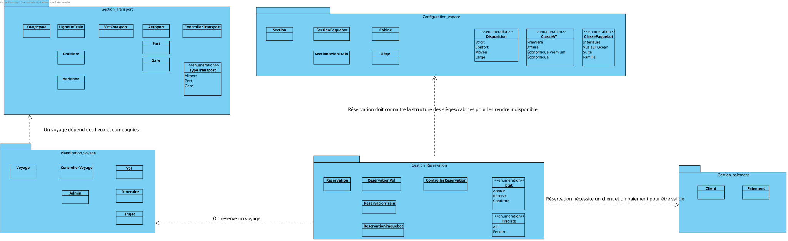

3. Révision du design logiciel du Devoir 1
Avec le feedback recu sur notre design initial, nous avons procédé à une révision approfondie de notre diagramme de classes pour améliorer la modularité, la réutilisabilité et la maintenabilité du système.
Le diagramme de paqets a aussi ete remanié pour mieux refléter les dépendances entre les modules et favoriser une architecture plus claire et plus évolutive.. Ce qui donnes des diagrammes suivants :
Diagramme de classe revisé
 Diagramme de paquets Revisé
Diagramme de paquets Revisé

3.1 Modules à usage général et réutilisables
L'objectif ici est de faire ressortir la modularité du système en identifiant les composants qui favorisent la réutilisation et la maintenance
Voyage
a. La classe Voyage est un module réutilisable car elle encapsule la logique de gestion d’un voyage (vol, itinéraire, Trajet)
de manière indépendante des types spécifiques de transport (avion, bateau, train). Elle peut être utilisée dans différents contextes
de réservation sans modification majeure. Par exemple, si nous voulons ajouter un nouveau type de voyage (Routier), nous n’aurions pas besoin
de modifier la classe Voyage, mais simplement d’ajouter une nouvelle classe qui hérite de LieuTransport.
b. Couplage Faible :En s'appuyant sur le principe d'inversion des dépendances (
DIP), la classe Voyage maintient un couplage faible en dépendant d'abstractions (comme LieuTransport et Compagnie).
Cela permet de réduire les dépendances entre les modules et facilite la maintenance et l’extension du système.
c. Cohésion forte: elle regroupe toutes les données nécessaires à la planification d'un Voyage (départ, arrivée, durée).
Elle peut intégrer de nouveaux types de voyage (comme le bus) sans modification interne, respectant ainsi le principe ouvert/fermé (
OCP).
LieuTransport
a. La classe LieuTransport est une abstraction et un polymorphisme ce qui fait que les autres classes par exemple Voyage, vont interagir
avec l’abstraction plutôt qu’avec les types spécifiques (Aeroport, Port, Gare). Cette classe est réutilisable dans d’autres systèmes de transport
car s’il faut rajouter d’autres lieux de transport il ne faut pas modifier la classe LieuTransport ou les contrôleurs. Le module respecte le
principe OCP : ouvert à l’extension, mais fermé à la modification.
b. Couplage Faible : le module est indépendant de la logistique du vol ou de l'itinéraire qui ont tous les deux un lieu de destination
et un lieu de départ (les associations "revient de" et "va vers" liées à la classe Voyage). On peut donc extraire LieuTransport dans une autre
application sans avoir à importer la logique de réservations et des paiements.
c. Cohésion forte: La classe LieuTransport et ses enfants ne s'occupent que d'une chose : identifier et localiser
un point géographique (sigle, ville, pays). Elle ne gère pas le prix des billets, ni les données des clients.
Cette responsabilité unique rend le module facile à comprendre et à tester isolément
Reservation
La classe Reservation encapsule la logique transactionnelle du système. Ce module est conçu
pour être réutilisable dans divers contextes de réservation (hôtellerie, location) car
il gère principalement une machine à états (Confirmée, Annulée, Réservée).
Sa cohésion est logique car elle differère du cycle de vie d'une réservation de la logique du transport.
Le couplage est réduit par l'utilisation de l'énumération Etat, évitant ainsi de disperser
la logique de contrôle dans le reste de l'application. En séparant la réservation du transport physique,
on permet au système d'évoluer de manière indépendante. Dans cette logique elle respecte bien le Single Responsability Principle (
SRP).
Section
Le module Section définit la structure spatiale et tarifaire d'un véhicule. Sa réutilisabilité est démontrée
par sa capacité à modéliser n'importe quel inventaire divisé en catégories (classe économique, cabine, etc.).
Grâce à l'héritage, la classe abstraite Section découple la gestion des prix et des capacités de la nature du véhicule (avion ou paquebot).
Elle présente une cohésion fonctionnelle forte, se concentrant uniquement sur la disposition et le calcul des tarifs. Ce design permet d'ajouter
de nouvelles configurations de sièges ou de cabines sans impacter les contrôleurs de réservation.
Les sections des avions, des trains ainsi que celles des paquebots étant différentes, la classe Section ne peut pas contenir toutes les méthodes relatives
à la gestion des sections. Voilà pourquoi la classe Section ne contient que les méthodes communes aux deux classes enfants. Cela fait référence au principe de substitution de Liskov (
LSP) :
n'importe laquelle des classes enfants peut remplacer la classe parent sans que cela n'affecte le fonctionnement du système.
Profil
a. La classe Profil est un module réutilisable car elle encapsule la logique de gestion d’un profil utilisateur (noms, courriel)
de manière indépendante des types spécifiques de transport (avion, bateau, train). Elle peut être utilisée dans différents contextes de réservation sans modification majeure.
Par exemple, si nous voulons ajouter un nouveau type de Profil (employé avec moins de permissions que l'admin), nous n’aurions pas besoin de modifier la classe Profil, mais simplement d’ajouter une nouvelle classe
qui hérite de Profil.
En ce qui concerne le faible couplage : Admin et client n'ayant pas des taches communes (il n'y a pas de tache qui peut se faire par les deux en meme temps), cela explique pourquoi la classe profil n'est associée
à aucune autre classe sauf pour l'heritage de "admin" et "client".
Compagnie
La classe Compagnie gère l'aspect organisationnel du système. Sa réutilisabilité est axée sur la gestion de l'identité des fournisseurs de services.
Elle maintient une cohésion forte en centralisant les informations administratives et tarifaires de base. Par une association avec Voyage, elle permet une extensibilité du réseau de transport
sans créer de dépendances cycliques. Ce module assure que les règles propres à une entreprise (comme le prixPleinTarif) restent isolées de la logistique technique des déplacements.
4. Qualités du design
4.1 Graphe AI

Interpretation
Ce graphe AI( Abstraction/Instabilité) nous permet d'evaluer la qualité de notre conception logicielle en se basant sur l'equilibre
entre le niveau d'abstraction de nos classes et leur degré d'instabilité.
La ligne diagonale ( rouge en pointillés) qui definie ici la realtion A + I = 1 représente la zone d'équilibre idéale ,
où une classe stable est absatraite et une classe instable peut etre concrète.
Dans notre cas précis, la majorité des paquets du Systeme se situent en dessous de la zone d'équilibre , ce qui indique que ces derniers sont globalement concrèts par rapport à leur niveau d'instabilité.
Cela correspond à la zone de rigidité caractérisée par des classes difficiles à modifier et peu flexibles.
4.2 Fardeaux
4.3 Couplage et Cohésion
Globalement, les modules réutilisables identifiés présentent une cohésion forte, car chacun concentre une seule responsabilité métier claire : représenter un voyage, un lieu, une réservation, une section, un profil ou une compagnie.
Cette séparation limite la dispersion des responsabilités et facilite les tests, la maintenance et la réutilisation.
Le design vise aussi un couplage faible à modéré : les classes centrales dépendent surtout d’abstractions métier (LieuTransport, Section, Profil) plutôt que d’implémentations spécifiques.
Cela réduit l’impact des changements et favorise l’extension du système. Les dépendances les plus nombreuses se trouvent logiquement autour des classes du cœur métier, mais elles restent justifiées par leur rôle central.
4.4 Relation entre le fardeau et le domaine des classes
L’analyse du fardeau confirme que les classes du noyau du domaine supportent naturellement davantage de dépendances que les classes périphériques.
On remaque qe des classes comme
Voyages ,
LieuTransport,
Compagnie et
Section ont tous des fardeaux de 7 qui peuvent etres considérés
comme elevés mais restent cohérentent du fait q'elles soient abstraites, ce qui releve d'un potentiel bon design .
D'autres classes comme
sectionPaquebot et
sectionAvion ont des fardeaux de 9 car elles héritent de la classe section qui a deja un fardeau élevé.
Cela va de meme pour des classes comme vol , trajet ... qui ont des fardeaux de 8 qui heritent de classes ayant assi des fardeaux élevés.
À l’inverse, la classe Reservation présente un fardeau plus faible (F = 4), ce qui traduit un rôle moins central. Son niveau d’abstraction peut donc
être plus faible sans compromettre la maintenabilité du système.
Ainsi, la relation entre fardeau et domaine est cohérente lorsque les classes métier les plus sollicitées sont aussi les plus stables, les plus cohésives et les mieux abstraites.
Les contributions sont approximativement équilibrées.
Remettante du Tp: Reine GUINGUIERE